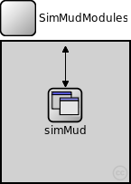
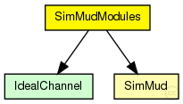
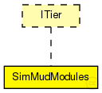

This documentation is released under the Creative Commons license
This documentation is released under the Creative Commons license(no description)
The following diagram shows usage relationships between types. Unresolved types are missing from the diagram. Click here to see the full picture.
The following diagram shows inheritance relationships for this type. Unresolved types are missing from the diagram. Click here to see the full picture.
| Name | Direction | Size | Description |
|---|---|---|---|
| udpIn | input | ||
| from_lowerTier | input | ||
| from_upperTier | input | ||
| tcpIn | input | ||
| tcpOut | output | ||
| udpOut | output | ||
| to_lowerTier | output | ||
| to_upperTier | output |
| Name | Type | Default value | Description |
|---|---|---|---|
| simMud.rpcUdpTimeout | double |
default timeout value for direct RPCs |
|
| simMud.rpcKeyTimeout | double |
default timeout value for routed RPCs |
|
| simMud.optimizeTimeouts | bool |
calculate timeouts from measured RTTs and network coordinates |
|
| simMud.rpcExponentialBackoff | bool |
if true, doubles the timeout for every retransmission |
|
| simMud.debugOutput | bool |
enable debug output |
|
| simMud.playerTimeout | double |
time for checking for dead nodes |
|
| simMud.areaDimension | double |
size of the play filed |
|
| simMud.AOIWidth | double |
size of the area of interest |
|
| simMud.maxMoveDelay | double |
time after which a move message is considered to be too late |
|
| simMud.numSubspaces | int |
number of subspaces per direction |
module SimMudModules like ITier { gates: input udpIn; input from_lowerTier; input from_upperTier; input tcpIn; output tcpOut; output udpOut; output to_lowerTier; output to_upperTier; submodules: simMud: SimMud; connections allowunconnected: from_lowerTier --> simMud.from_lowerTier; to_lowerTier <-- simMud.to_lowerTier; from_upperTier --> simMud.from_upperTier; to_upperTier <-- simMud.to_upperTier; udpIn --> simMud.udpIn; udpOut <-- simMud.udpOut; }
This documentation is released under the Creative Commons license